Electrical Manufacturing Assistant
- Built hydrophones, an embedded sensor system for recording underwater acoustics.
- Developed a PyTorch anomaly-detection model for hydrophone power-health monitoring, integrated into the MATLAB DL Toolbox.
- Performed signal processing and analysis on acoustic data, deriving transfer functions to characterize hydrophone frequency response.
- Migrated legacy calibration software from LabVIEW to MATLAB, using AI tools to accelerate the code translation.
- Managed intern-led development of a Raspberry Pi (Linux) deep-sea camera control system for real-time field operation.
- Authored manufacturing procedures and assembly documentation to ensure repeatable, validated builds across deployments.

Project Member
- Designed a 2.4 GHz Wi-Fi/Bluetooth low-noise amplifier (LNA) in a 4-person team; the LNA is a receiver’s first stage, boosting faint signals without burying them in its own noise.
- Ran the impedance-matching and bias-network simulations in Keysight ADS, so incoming signal is absorbed rather than reflected; the design met its targets with a noise figure under 2.5 dB and input reflection (S11) below −15 dB.
Focuses
Languages
Frameworks & Libraries
Tools
BARELY SEE THE BEACH
FROM ANTH WITH LOVE · Present
- HTML / CSS / JS
Redesigning the web storefront for local streetwear brand Barely See The Beach to improve the shopping experience and better showcase the brand.
********
FROM ANTH WITH LOVE · Present
- TypeScript
- Rust
- PostgreSQL
- Cloud Infrastructure
Building software for music collaboration.
Pomona
FROM ANTH WITH LOVE · Present
- C++
- ESP32
- MQTT
- React
- PlatformIO
Building a connected hardware-and-software system as a personal gift for my grandpa, combining embedded control, sensing, and a web interface.
Taal
Short Film · Present
Composer
Triton Television Production
Dir. Vaish Kurupath. UPDATE: DELAYED.
A dramedy about Arjun, a canceled young comedian who returns to the tabla after his estranged teacher dies and names him to perform at the memorial.
Pukka: Sneaker Authentication Platform
ECE 140B · Spring 2026
- SwiftUI
- FastAPI
- PostgreSQL
- Docker
- OpenCV
- Raspberry Pi
- Pi Camera / NIR / Load Cell
In a team of 3, we built a physical sneaker authentication system that combines image, near-infrared, and weight data to identify counterfeit shoes with a confidence score. Awarded 2nd place at The Basement at UCSD’s Demo Day.
PICO-9: Custom ISA & Processor
CSE 141L · Spring 2026
- SystemVerilog
- Python
- ModelSim
- Quartus
Designed a custom 9-bit RISC processor and two-pass assembler from scratch, then validated it with programs for Hamming distance, arithmetic, and signed multiplication.
The False Tremor: Sampling, Aliasing & Reconstruction
ECE 101 · Spring 2026
- MATLAB
- DSP
- FIR Filter Design
Demonstrated how undersampling can turn high-frequency machine noise into a false structural tremor, then designed an anti-aliasing filter to prevent it.
Edge-AI Thermal Sensing IoT System
ECE 140A · Winter 2026
- C++ / Arduino
- ESP32
- FastAPI
- MQTT
- WebSockets
- TensorFlow Lite Micro
Built an end-to-end thermal sensing system that streams sensor data, trains a presence-detection model, and deploys quantized inference directly on an ESP32.
Transformer from Scratch & Retrieval-Augmented Generation
CSE 156 · Winter 2026
- Python
- PyTorch
- LangChain
- FAISS
Implemented a Transformer from scratch and built generation and retrieval pipelines with beam search, vector search, and ColBERT-style reranking.
Viterbi Decoder: FPGA Convolutional-Code Error Correction
ECE 111 · Winter 2026
- SystemVerilog
- FPGA
- Quartus
- ModelSim
Built and verified an FPGA Viterbi decoder for convolutional error correction, achieving 256/256 correctly decoded test bits and stress-testing its limits under channel errors.
After Hours
Short Film · Winter 2026
Co-Producer / Composer / Boom Operator
Triton Television Production
Dir. Ian Kiar.
DP: Hayk Atshemyan.
Co-produced the shoot and composed an original score for a 48-hour short film.
SocialCircle: Social-Network Link Prediction
CSE 158 · Fall 2025
- Python
- pandas
- NumPy
- NetworkX
- scikit-learn
Built a link-prediction system across 1.39 million friend pairs using graph-based features and machine learning, with the strongest models reaching roughly 0.86–0.89 ROC-AUC.
Library Loop
CSE 170 · Fall 2025
- HTML / CSS / JS
- Figma
Designed and built a web prototype that makes local library events, programs, resources, and services easier to discover and navigate.
Symbolic Music Generation
CSE 153 · Spring 2025
- Python
- PyTorch
- MIDI
- REMI
Built generative music models that create piano performances and chord-conditioned melodies from MIDI, then evaluated the results using music-specific quality metrics.
Darling, Forgive Me
Short Film · 2025
Writer / Co-Director / Composer
Freelance, in support by MPRO Productions.
Dir. Ronald Bagsic & Anthony Jared
DP: Griffin Edwards.
Scouted locations and composed an original score for an accepted SDSU Film School audition.
Supervised Learning Models for Binary Classification
COGS 118A · Fall 2024
- Python
- scikit-learn
- NumPy
- pandas
Compared five machine-learning models across four classification datasets, evaluating how model choice and training-set size affected performance through cross-validation and hyperparameter tuning.
Band Pass Filter
ENGR 210 · Spring 2023
- Multisim
- MATLAB
- Simulink
- Arduino
Designed, simulated, built, and tested an RLC band-pass filter, validating its measured frequency response against calculated and simulated results.
Griffin Radio
Radio Play / Audio Drama · 2023
Co-Writer / Recording Engineer
Grossmont College Media Communications Department Production
Produced by Dr. Evan Wirig.
Our team of 8 produced an hour-long radio play with narration-driven storytelling, cast direction, and SFX/foley design.
A Fork in the Road
Short Film · 2023
Composer
Southwestern College (FTMA) Production
Dir. E. McCall.
Composed a thematic score and assisted in rigging for two weekend shoots.
Drone Recon Data Service
CSIS 294 · Spring 2021
- Java Servlets
- JSP
- REST API
- JDBC/SQL
- Apache Tomcat
Built a Java web application that simulates drone surveys, stores reconnaissance data, and exposes summarized results through a database-backed REST service.
P2P Blockchain Miner
CSIS 294 · Spring 2021
- Java
- Multithreading
- TCP Sockets
Built a multithreaded peer-to-peer blockchain node that mines proof-of-work blocks and exchanges transactions and blocks with other networked peers.
SCPA Graduation Video: Class of 2020
Video · 2020
Producer
San Diego SCPA Production
Dir. Thomas Antl.
As Senior Class President, handled logistics and personnel sourcing across three weeks.
Life’s A Fight
Short Film · 2019
Writer / Director / Editor
San Diego City College (c/o San Diego SCPA) Production
Dir. A.J. Villalino.
Led a 4-person unit for a 24-hour film accepted into Grossmont College’s Directing Short Change Film Festival.
Under the Tulips
Short Film · 2018
Sound Designer / Boom Operator
San Diego SCPA Production
Dir. Lucia Wallin.
Oversaw all audio assets for a thesis film in the SCPA film department.

Designed, developed, and deployed hydrophones for the High-frequency Acoustic Recording Package (HARP), supporting research on biological and non-biological soundscapes across the Southern California Bight, Gulf of Mexico, Azores, and the Canadian Arctic, where I specialized. This work supports the Scripps Whale Acoustics Laboratory in collaboration with Oceans North.

Modeled a variable parallel-plate capacitor to analyze how dielectric material, plate area, and plate separation affect capacitance. Findings have reinforced that capacitance increases with a higher dielectric constant, larger plate area, and smaller gap, connecting these principles to RAM and EV regenerative braking.
University of California, San Diego
B.S. ECE: Computer Engineering
Project Lead, IEEE · Hack Student, ACM · Producer, Triton Television
Grossmont College
A.S. Mathematics
A.S. Physics
A.S. Computer Science
Founding Member, Grossmont Cuyamaca CS
Made with love by A.J. Villalino.